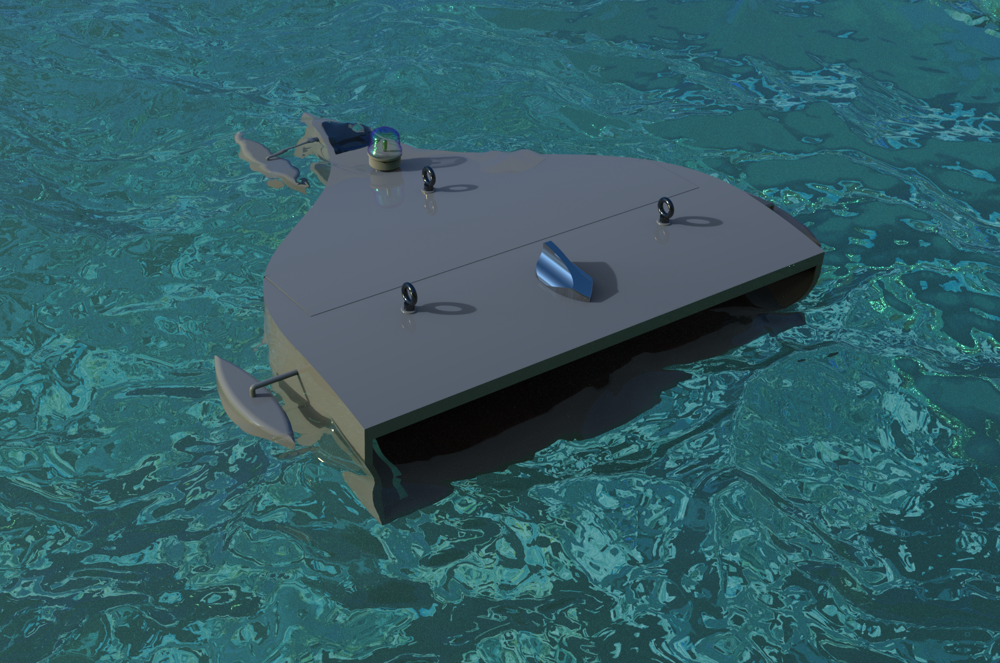
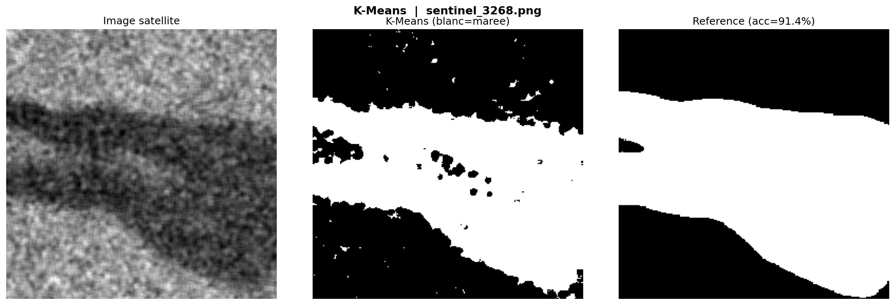

Conception d'un drone sous-marin autonome intégrant des procédés écologiques et guidé par image satellite grâce à la reconnaisse de marée noire
Le drone marin constitué d'un filtre à base de cheveux va être déposé dans la zone d'une marée noire et va agir en essaim. Un kilogramme de cheveux absorbe huit litres d'hydrocarbure, c'est donc à l'aide de cent drone qu'une marée noire va pouvoir être nettoyée à 95% !

